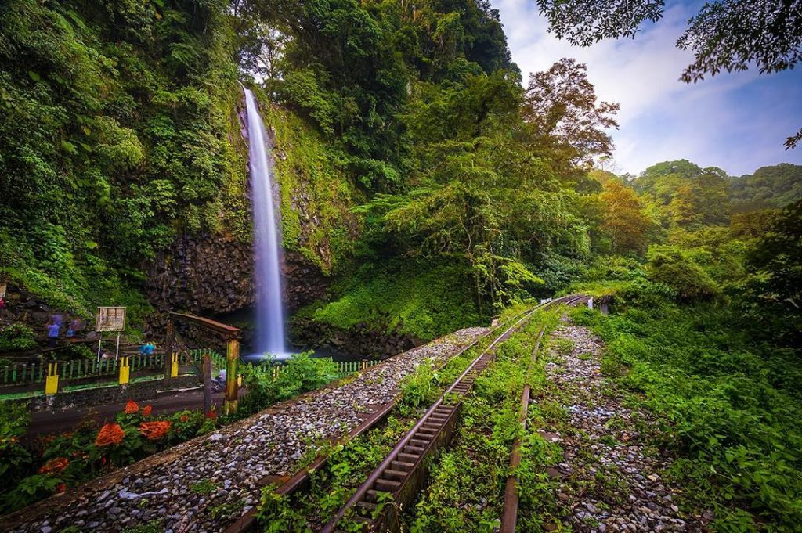

Air Terjun Lembah Anai
Air Terjun Lembah Anai (dikenal pula Air Mancur, ejaan lama: Ajer Mantjoer) adalah sebuah air terjun yang terletak di jorong aie mancua nagari Singgalang, X Koto, Kabupaten Tanah Datar, Sumatera Barat. Air terjun setinggi sekira 35 meter ini berada tepat di tepi Jalan Raya Padang-Bukittinggi di kaki Gunung Singgalang. Air Terjun Lembah Anai merupakan bagian dari aliran Sungai Batang Lurah, anak Sungai Batang Anai yang berhulu di Gunung Singgalang di ketinggian 400 Mdpl. Air terjun ini terletak di batas barat kawasan Cagar Alam Lembah Anai sehingga suasana masih alami dengan hutan lebat serta pepohonan rimbun. Disekitar air terjun pun terdapat monyet yang berkeliaran. Pada saat liburan, air terjun ini dikunjungi oleh ratusan pengunjung. Keindahannya membuat Air Terjun Lembah Anai menjadi ikon pariwisata Provinsi Sumatera Barat.
Kembali